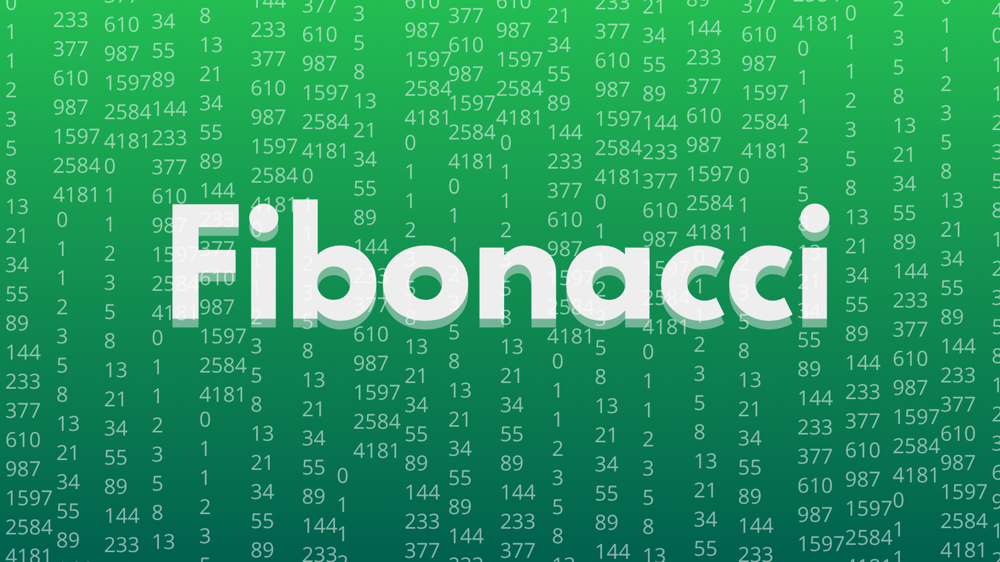
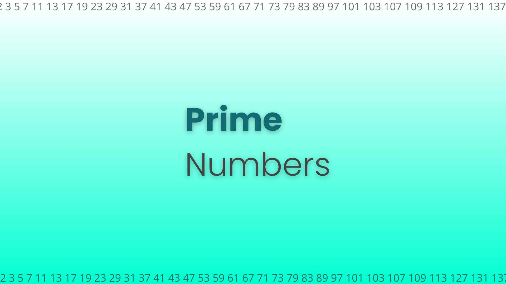

mateusm4
Go to Github

Fibonacci was released!
"Fibonnaci" is a Python script to generate Fibonacci sequences. Python 'sys' library only. Click in the button next to it to discover.
Check it out

Prime Numbers is available!
"Prime Numbers" is a script, written in Python, to generate prime numbers. It uses only built-in Python libraries. Click in the button next to it to get.
Get "Prime Numbers"